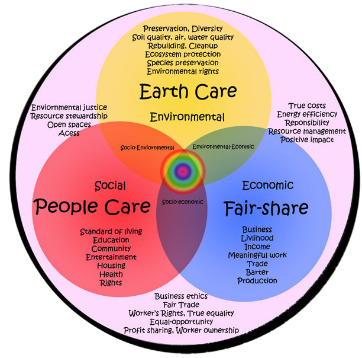

Permaculture
Ethics
1. Care of the Earth
This principle is all about looking after the planet that keeps us alive. The Earth provides everything we need; air, water, food, and shelter. Since it's the only source of these essentials, it's common sense to take care of it. Everything on Earth, from the soil and plants to rivers and animals, is connected. By keeping ecosystems healthy, we're essentially looking after ourselves. This includes taking care of the soil, which supports all plant life and preserving forests, which clean our air and help regulate the water cycle.

2. Care of PeopleThis principle emphasizes the importance of taking care of each other and creating strong, supportive communities. Humans are social creatures and just like bees or ants, we rely on each other to thrive. It's the idea of “teach a person to fish,” so we all benefit long-term. A key point here is that you can't help others if you're not taking care of yourself first. So, this principle starts with self-care and extends outward, from family to neighbors, then to the broader community and eventually to the world.
3. Fair Share
The Fair Share principle is about understanding that there are only so many resources to go around, so it's important to take only what you need and share the rest. Our modern consumer culture pushes for constant growth and more consumption, but that doesn't work in a world with limited resources. Instead, permaculture encourages us to recognize when we have more than we need and to give back; whether that is sharing food, skills, or time.